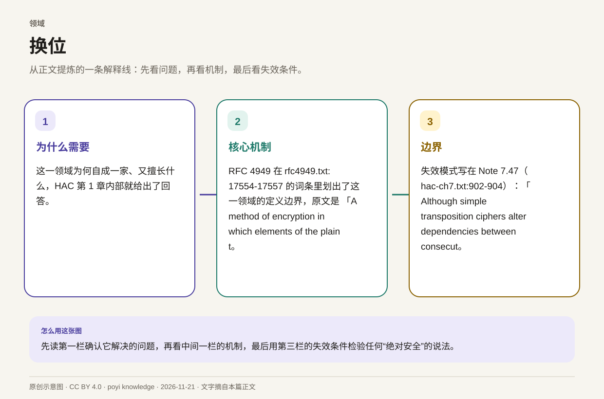

原理与机制
领域：换位（Transposition）。RFC 4949 在 rfc4949.txt:17554-17557 的词条里划出了这一领域的定义边界，原文是 「A method of encryption in which elements of the plain text retain their original form but undergo some change in their sequential position.(Compare: substitution.)」（一种加密方法：明文元素保持原形，只是先后位置发生变化。（比较：代替。））。成对的另一条 rfc4949.txt:16510-16513 印着 「A method of encryption in which elements of the plain text retain their sequential position but are replaced by elements of cipher text.(Compare: transposition.)」（一种加密方法：明文元素保持先后位置不变，但被替换为密文元素。（比较：换位。））。可见要点在于什么都不被替换：符号原样保留，只是顺序被挪动。HAC 在 hac1.txt:550 给出了同一思想的密码层面表述：简单换位密码只是对块内符号做置换。上面两处引文里连续的空格串是词汇表续行的原生缩进（词条按 72 列换行），此处照排印原样保留、未作清理。

为什么重要
这一领域为何自成一家、又擅长什么，HAC 第 1 章内部就给出了回答。hac1.txt:550 原文是 「Another class of symmetric-key ciphers is the simple transposition cipher, which simply permutes the symbols in a block.」（另一类对称密钥密码是简单换位密码，它只是对块内符号做置换）。定义 1.32（hac1.txt:551-553）把密钥取为对位置 1 到 t 的一个置换 e，逐块施加；该定义里的属于记号在本抽取件中印成空白，所以形式部分只做转述，存活的行文则直接引用：「The set of all such transformations is called a simple transposition cipher.」（全体这样的变换构成的集合称为简单换位密码），以及 「The decryption key corresponding to e is the inverse permutation d = e-1.」（与 e 对应的解密密钥是逆置换 d = e-1）。密钥空间的计数在 hac1.txt:707：「a transposition cipher of block length t has t!encryption functions from which to select.」（块长为 t 的换位密码有 t!个加密函数可供选择）。把它与代替配对的动机写在 hac1.txt:677：「Simple substitution and transposition ciphers individually do not provide a very high level of security.However, by combining these transformations it is possible to obtain strong ciphers.」（单独的简单代替或换位密码都不能提供很高的安全水平；但把这两种变换组合起来可以得到强密码）。Remark 1.36（hac1.txt:681）点明两者的分工：「A substitution in a round is said to add confusion to the encryption process whereas a transposition is said to add diffusion.」（一轮中的代替贡献混淆，而换位贡献扩散）。而其固有弱点恰是机制的镜像，印在 hac1.txt:554：「A simple transposition cipher preserves the number of symbols of a given type within a block, and thus is easily cryptanalyzed.」（简单换位密码保留块内各类符号的个数，因此容易被破译）。
应用与实例
HAC 第 7 章把这一构造作为工作背景保留下来，并把它放进现代设计之中。操作规则在 hac-ch7.txt:862-866，原文为 「For a simple transposition cipher with fixed period t, encryption involves grouping the plaintext into blocks of t characters, and applying to each block a single permutation e on the numbers 1 through t.」（对固定周期 t 的简单换位密码，加密先把明文分成每块 t 个字符，再对每块施加 1 到 t 上的同一个置换 e）（其中的连续空格串是本抽取件的续行缩进）。例 7.43（hac-ch7.txt:872-876）：「Consider a simple transposition cipher with t = 6 and e = (6 4 1 3 5 2).The message m = CAESAR is encrypted to c = RSCEAA.」（设 t=6、e=(6 4 1 3 5 2) 的简单换位密码，明文 m = CAESAR 加密为 c = RSCEAA）。Note 7.44 随后处理术语：传统名称 transposition 与现代名称 permutation 指同一个映射，文中说（hac-ch7.txt:889-890）「The latter terminology is used, for example, in substitution-permutation networks, and in DES」（例如在代替-置换网络与 DES 中使用的就是后一种叫法）。密钥也可用助记词，但文中在 hac-ch7.txt:892-894 警告：「A mnemonic keyword may be used in place of a key, although this may seriously decrease the key space entropy.」（助记关键词可以代替密钥，但会严重降低密钥空间熵）。固定的换位步骤在 HAC 之外的标准时代分组密码中同样存活：RFC 6114（CLEFIA）的符号表 rfc6114.txt:163 写明 trans(a) 表示对向量或矩阵 a 作换位，第 4.4 节（rfc6114.txt:455-467）在乘以每个扩散矩阵之前先对四个字的向量施加 trans()——一个不含密钥、永久固定的换位部件，正是 hac1.txt:680 所说乘积密码中那一段的含义。
边界与攻击面
失效模式写在 Note 7.47（hac-ch7.txt:902-904）：「Although simple transposition ciphers alter dependencies between consecutive characters, they are easily recognized because they preserve the frequency distribution of each character.」（简单换位密码虽然改变了相邻字符间的依赖，却因保留每个字符的频率分布而很容易被识别）。置换只重排，密文统计就是明文统计，hac-ch7.txt:1448-1449 给出了实际后果：「Cryptanalyzing transposed blocks resembles solving an anagram.」（破译换位块类似于解字母重排字谜）。HAC 第 1 章在 hac1.txt:554 说了同一件事：简单换位密码保留块内各类符号的个数，因而易被破译。例 7.72（hac-ch7.txt:1364-1367）在随机密码模型下补了一个定量边界：「The unicity distance of a simple transposition cipher of period t can be estimated under the random cipher model」（周期为 t 的简单换位密码的唯一距离可在随机密码模型下估计），取明文冗余 3.2 比特/字符，并且 「for t = 12 the estimated unicity distance is 9 characters」（t=12 时唯一距离的估计值是 9 个字符）——不足一个块，说明周期很小时该估计已经退化；同一行对 t=27 给出更合理的 29 个字符。这些留存来源没有记载任何已公开的、针对实际部署的换位系统的攻破案例，本文也不作此类断言；它们确实印出的是：这一类的可分析性内生于其统计保持。
历史与背景
第 7 章只给出粗线条的定年：hac-ch7.txt:846-849 说古典密码是历时变得广为人知的技术，且 「generally created prior to the second half of the twentieth century (in some cases, many hundreds of years earlier)」（一般创制于二十世纪下半叶之前（有些早达数百年）），并且 「Many classical techniques are variations of simple substitution and simple transposition.」（许多古典技术是简单代替与简单换位的变体）。一个有名字的近代实例在第 7.4 节的注释里：分次（fractionation）作为早期乘积密码的思想，在 hac-ch7.txt:3084-3086 归于 「Shannon [1121], and Kahn [648, p.344] who identifies this idea in an early product cipher, the WWI German ADFGVX field cipher.」（Shannon 与 Kahn——后者在一战德军 ADFGVX 野战密码这一早期乘积密码中识别出该思想）。同一注释块确定了配对使用的观念史：「Transposition and substitution, respectively, rest on the principles of diffusion and confusion.」（换位与代替分别建立在扩散与混淆原则之上）（hac-ch7.txt:3097-3098）；第 1 章注释 hac1.txt:1637 同样把混淆与扩散归于 Shannon 的工作。方括号里的 [1121]、[648] 是原书的文献编号，留存件没有展开成书目条目，故本文不给出任何展开后的书目断言。就文献年代而言，上面的词汇表定义（rfc4949.txt:17554）按其头部 rfc4949.txt:7-8 属于 2007 年 8 月的 RFC，比 1996 年的手册正文晚大约十年。
逐步示例与核验
范围模型
列出属于该条目的代表实体、相邻实体、时间断点与跨域关系；范围外对象不并入。
参考出处
- Wikipedia search entry for 换位. https://zh.wikipedia.org/w/index.php?search=%E6%8D%A2%E4%BD%8D
- A Brief History of Cryptology and Cryptographic Algorithms (Dooley, Springer 2013). https://link.springer.com/book/10.1007/978-3-319-01628-3